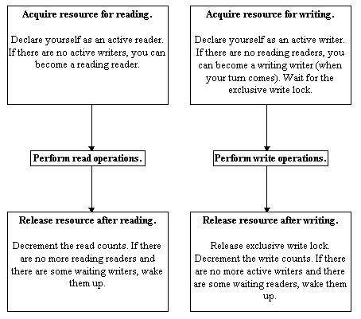
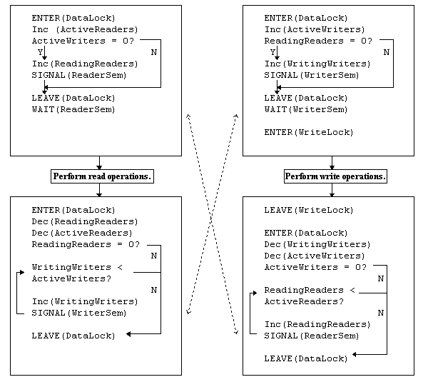

Chapter 11. Synchronizers and Events.
In this chapter:
More synchronization mechanisms.
The material introduced in previous chapters has covered all of the basic
synchronization mechanisms. On the whole, semaphores and mutexes allow
the programmer to create all other synchronization mechanisms, albeit with
some effort. Despite this, there are some situations which are very common
in multithreaded programming, but not easy to deal with using the mechanisms
shown so far. Two new primitives will be introduced to solve these problems:
The Multi Read Exclusive Write Synchronizer, and the Event. The former
is provided in some versions of Delphi as part of the VCL, and the latter
is provided by the Win32 API.
When optimal efficiency
is a must.
So far, all operations on a shared value have been mutually exclusive.
All read and write operations have been protected to the extent that only
one read or one write happens at any one time. However, in many real world
situations where a critical resource must be accessed frequently by a large
number of threads, this can turn out to be inefficient. Exclusive locking
is in fact more cautious than is absolutely necessary. Recalling chapter
6, note that the minimum synchronization required is that:
-
Read operations can execute concurrently.
-
Write operations cannot execute at the same time as read operations.
-
Write operations cannot execute at the same time as write operations.
By allowing an absolute minimum of concurrency control, it is possible
to produce a significant increase in performance. The best performance
increases are realized when many read operations occur from a relatively
large number of threads, write operations are relatively infrequent, and
only a small number of threads perform writes.
These conditions hold in numerous real world situations. For example,
the stock database for a company may contain a large number of items, and
numerous reads may occur in order to calculate the availability of certain
goods. However, the database is only updated when items are actually ordered
or shipped. Similarly, membership records may be checked many times in
order to find addresses, send out mailings and check subscriptions, but
members join, leave or change their addresses relatively infrequently.
The same holds in computing situations: master lists of global resources
in a program may be read often, but written infrequently. The required
level of concurrency control is provided by a primitive known as the Multiple
Read Exclusive Write Synchronizer, henceforth referred to as an MREWS.
Most synchronizers support four main operations: StartRead, StartWrite,
EndRead
and EndWrite. A thread calls StartRead on a particular synchronizer
when it wishes to read the shared resource. It will then perform one or
more read operations, all of which are guaranteed to be atomic and consistent.
Once it has finished reading, it calls EndRead. If two read operations
are performed between a given pair of calls to StartRead and EndRead, the
data obtained in those two reads is always consistent: no write operations
will have occurred between the calls to StartRead and EndRead.
Likewise, when performing a series of write operations, a thread will
call StartWrite. It may then perform one or more write operations, and
it can be sure that all write operations are atomic. After the write operations,
the thread will call EndWrite. The write operations will not be overwritten
by other writers, and no readers will read inconsistent results due to
the write operations in progress.
A Simple MREWS.
There are several ways of implementing an MREWS. The VCL contains a fairly
sophisticated implementation. In order to familiarize the user with the
basic principles, here is a simpler but slightly less functional implementation
using semaphores. The simple MREWS contains the following items:
-
A critical section to guard shared data access (DataLock).
-
An integer count of the number of active readers (ActRead).
-
An integer count of the number of reading readers (ReadRead).
-
An integer count of the number of active writers (ActWrite).
-
An integer count of the number of writing writers (WriteWrite).
-
A pair of semaphores, known as the Reader and Writer semaphores (ReaderSem
and WriterSem).
-
A critical section to enforce complete write exclusion (WriteLock).
The reading and writing can be summarized thus:

There are two stages in reading or writing. The first is the active
stage, where a thread indicates its intent to read or write. Once this
has occurred, the thread may be blocked, depending on whether there are
other read or write operations in progress. When it becomes unblocked,
it enters the second stage, performs the read or write operations, and
then releases the resource, setting the counts of active and reading readers
or writers to appropriate values. If it is the last active reader or writer,
it unblocks all threads which were previously blocked as a result of the
operation that the thread was performing (read or write). The following
diagram illustrates this in more detail.

At this point, an implementation of this particular breed of synchronizer
should be obvious. Here
it is. If at this point the reader is still confused, then don't panic!
This synchronization object is not easily understood at first sight! Stare
at for a few minutes, and if you start seeing double before you understand
it, then don't worry about it, and move on!
Implementation points to note.
There is an asymmetry in the synchronization scheme: threads potentially
wanting to read will block before reading if there are any active
writers, whilst threads wanting to write block before writing if there
are any reading readers. This gives priority to writing threads;
a sensible approach, given that writes are less frequent than reads. This
need not necessarily be the case, and since all calculations about whether
a thread is to be blocked or not occur in the critical section, it is perfectly
allowable to make the synchronizer symmetrical. The downside to this is
that, if many concurrent read operations occur, they may prevent writes
from occurring at all. Of course, the opposite situation, with many writes
stopping read operations is always the case.
Also worth noting is the use of semaphores when acquiring the resource
for reading or writing: Wait operations on semaphores must always be performed
outside the critical section that guards the shared data. Thus the conditional
signalling of a semaphore inside the critical section is purely to ensure
that the resulting wait operation does not block.
An example use of the
simple MREWS.
In order to demonstrate what the MREWS does, it is necessary to digress
slightly from the examples presented so far. Imagine that it is necessary
for a large number of threads to keep track of the status of a number of
files in a certain directory. These threads want to know if a file has
changed since the thread last accessed that file. Unfortunately, the files
can be changed by a number of different programs on the system, so it is
not possible for a single program to keep track of the various file operations
being performed on all the files.
This example has a worker thread which iterates through all the files
in a directory, calculating a simple checksum for each file. It does this
over and over, effectively ad infinitum. The data is stored in a list which
contains an MREW synchronizer, thus allowing a large number of reader threads
to read the checksums on one or more files.
First, let's look at the source for the checksum list. Here
it is. The basic operations are:
-
Set the checksum for a particular file. This adds an entry for the file
into the list if it does not exist.
-
Get the checksum for a particular file. This returns 0 if the file is not
found.
-
Remove a file from the list.
-
Get a string list of all the filenames.
-
Get a string list of all the file names followed by their checksums.
All these publicly accessible operations have appropriate synchronization
calls at the start and end of the operation.
Note that there are a couple of methods which start with the name "NoLock".
The methods are methods which need to be invoked from more than one publicly
visible method. The class has been written this way because of a limitation
of our current synchronizer:
Nested calls to start reading or writing
are not allowed. All operations which use the simple synchronizer must
only call StartRead or StartWrite if they have ended all previous read
or write operations. This will be discussed in more detail later. Apart
from this, most of the code for the checksum list is fairly mundane, consisting
mostly of list handling, and should present no surprises for most Delphi
programmers.
Now lets look at the worker
thread code. This thread looks slightly different from most example
threads that I have presented so far because it is implemented as a state
machine. The execute method simply executes an action function for each
state, and depending on the return value of the function, looks up the
next state required in a transition table. One action function reads the
list of files in from the checksum list object, the second removes unnecessary
checksums from the list, and the third calculates the checksum for a particular
file, and updates it if necessary. The beauty of using a state machine
is that it makes thread termination a lot cleaner. The execute method calls
the action functions, looks up the next state and checks for thread termination
in a while loop. Since each action function normally takes a couple of
seconds to complete, thread termination is normally fairly fast. In addition,
only one test for termination is necessary in the code, making the code
cleaner. I also like the fact that the entire state machine logic is implemented
in one line of code. There is a certain neatness to it all.
Finally, we'll take a look at the code
for the main form. This is relatively simple: the thread and checksum
list are created at start-up, and destroyed when the program is closed.
The list of files and their checksums is displayed on a regular basis as
the result of a timer. The directory which is watched is hard coded in
this file; readers wishing to run the program may wish to change this directory,
or possibly modify the program so that it can be specified at program start-up.
This program does not perform operations on shared data in a strictly
atomic manner. There are several places in the update thread where local
data is implicitly assumed to be correct, when the underlying file may
have been modified. A good example of this is in the thread "check file"
function. Once the file checksum has been calculated, the thread reads
the stored checksum for that file, and updates it if it does not agree
with the current calculated checksum. These two operations are not atomic,
since multiple calls to the checksum list object are not atomic. This mainly
stems from the fact that nested synchronization calls do not work with
our simple synchronizer. One possible solution is to give the checksum
list object two new methods: "Lock for Reading" and "Lock for Writing".
A lock could be acquired on the shared data, either for reading or writing,
and the multiple read or write operations performed. However, this still
does not solve all the possible synchronization problems. More advanced
solutions will be discussed later on in this chapter.
Since the inner workings of the synchronizer occur at the Delphi level,
it is possible to obtain an estimate of how often thread conflicts actually
occur. By placing a breakpoint in the while loops of the EndRead and EndWrite
procedures, the program will be stopped if a reader or writer thread was
blocked whilst trying to access the resource. The breakpoint actually occurs
when the waiting thread is unblocked, but an accurate count of conflicts
can be made. In the example program, these conflicts are quite rare, especially
under low load, but if the number of files and checksums becomes large,
conflicts are increasingly common, since more time is spent accessing and
copying shared data.
An introduction to Events.
Events are perhaps one of the simplest synchronization primitives to understand,
but an explanation of them has been left to this point, simply because
they are best used in conjunction with other synchronization primitives.
There are two types of events: manual reset events and auto reset
events. For the moment, we will consider manual reset events. An event
works exactly like a traffic light (or stop light for U.S. readers). It
has two possible states: signalled (analogous to a green traffic light)
or non-signalled (analogous to a red traffic light). When the event is
signalled, threads performing a wait on the event are not blocked and continue
execution. When the event is non-signalled, threads performing a wait on
the event are blocked until the event is signalled. The Win32 API provides
a range of functions for dealing with events.
-
CreateEvent / OpenEvent: These functions are similar to the other Win32
functions for creating or opening synchronization objects. As well as allowing
the event to be created in either a signalled or non-signalled state, a
boolean flag states whether the event is a manual reset or auto reset event.
-
SetEvent: This sets the event state to signalled, thus resuming all threads
that are waiting on the event, and allowing later threads to pass through
without blocking.
-
ResetEvent: This sets the event state to non-signalled, thus blocking all
threads that subsequently perform a wait on the event.
-
PulseEvent: This performs a set-reset on the event. Hence, all threads
waiting on the event when the event is pulsed are resumed, but later threads
waiting on the event still block.
Auto reset events are a special case of manual reset events. With an auto
reset event, the state of a signalled event is set back to non-signalled
once exactly one thread has passed through the event without blocking,
or one thread has been released. In this sense, they work in an almost
identical manner to semaphores, and if a programmer is using auto reset
events, they should consider using semaphores instead, in order to make
the behaviour of the synchronization mechanism more obvious.
Event simulation using
semaphores.
An event primitive can in fact be created by using semaphores: It is possible
to use a semaphore to conditionally block all threads waiting on the event
primitive and unblock threads when the primitive is signalled. In order
to do this, a very similar approach to the synchronizer algorithm is used.
The event keeps two pieces of state: a boolean indicating whether the event
is signalled or not, and a count of the number of threads currently blocked
on the semaphore in the event. Here's how the operations are implemented:
-
CreateEvent: The event object is created, the count of blocked threads
is set to zero, and the signal state is set as specified in the constructor.
-
SetEvent: The signal state is set to not block incoming threads. In addition,
the count of threads blocked on the semaphore is examined, and if it above
zero, then the semaphore is signalled repeatedly until all blocked threads
are unblocked.
-
ResetEvent: The signal state is set to block incoming threads.
-
PulseEvent: All threads currently blocked on the semaphore are unblocked,
but no change is made to the signal state.
-
WaitForEvent: The signal state of the event is examined. If it indicates
that the event is signalled, then the internal semaphore is signalled,
and the count of threads blocked on the semaphore is decremented. The count
of blocked threads is then incremented, and a wait is performed on the
internal semaphore.
Here
is the code for a simulated event using semaphores. If the reader has
understood the simple synchronizer, then this code should be fairly self
explanatory. The implementation could be slightly simplified by replacing
the while loops that unblock threads with a single statement that increments
the count on the semaphore by the required amount, however the approach
implemented is more consistent with the implementation of the synchronizer
presented previously.
The simple MREWS using events.
The control structures required to simulate an event using semaphores are
remarkably similar to the structures used in the simple synchronizer. Thus
it seems sensible to try and create a synchronizer using events instead
of semaphores. This isn't particularly difficult: here
it is. As normal, the conversion raises a couple of implementation
issues worth looking at.
First and foremost, the simple synchronizer calculated whether threads
should be blocked in the critical section part of the StartRead and StartWrite
procedures, and then performed the required blocking actions outside the
critical section. The same is necessary for our new event synchronizer.
In order to do this, we assign a value to a local variable called "Block"
(remember, local variables are thread safe). This is done inside the DataLock
critical section, to guarantee consistent results, and the blocking actions
are performed outside the critical section to avoid deadlock.
Secondly, this particular synchronizer is symmetric, and affords read
and write operations equal priority. Unfortunately, since there is only
one set of counts in this synchronizer, it is rather more difficult
to make it asymmetric.
The Delphi MREWS.
The main problem with the existing synchronizers is that they are not re-entrant.
It is completely impossible to nest calls to StartWrite, and an instant
deadlock will occur. It is possible to nest calls to StartRead, provided
that no threads call StartWrite in the middle of a sequence of nested calls
to StartRead. Again, if this occurs, deadlock will be an inevitable consequence.
Ideally, we would like to be able to nest both read and write operations.
If a thread is an active reader, then repeated calls to StartRead should
have no effect, provided they are matched by an equal number of calls to
EndRead. Similarly, nested calls to StartWrite should also be possible,
and all but the outer pair of StartWrite and EndWrite calls should have
no effect.
The second problem is that the synchronizers illustrated so far do not
allow atomic read-modify-write operations. Ideally, it should be possible
for a single thread to call: StartRead, StartWrite, EndWrite, EndRead;
thus allowing a value to be read, modified and written atomically. Other
threads should not be allowed to write in any part of the sequence, and
they should not be allowed to read during the inner write part of the sequence.
With current synchronizers, it is perfectly possible to do this by simply
performing the read and write operations inside a pair of calls to StartWrite
and EndWrite. However, if the synchronization calls are embedded in a shared
data object (as in the example) it can be very difficult to provide a convenient
interface to that object that allows read-modify-write operations without
also providing separate synchronization calls to lock the object for reading
or writing.
In order to do this, an altogether more sophisticated implementation
is required, whereby every start and end operation looks at exactly which
threads are currently performing read or write operations. This is in fact
what the Delphi synchronizer does. Unfortunately, licensing agreements
mean that it is not possible to display the VCL source code here and discuss
exactly what it does. However, suffice to say that the Delphi MREWS:
-
Allows nested read operations.
-
Does not allow nested write operations.
-
Allows Read operations to be promoted to write operations, allowing read-modify-write
operations to be done with minimal locking at each stage of the proceedings.
-
Is written very much for efficiency: Critical sections are used only where
absolutely necessary, and interlocked operations are preferred. This obfuscates
the code a little, but the increase in efficiency is more than worthwhile.
-
Can be swapped with the synchronizer classes presented above with no change
in semantics.
[Contents] [Previous][Next]
© Martin Harvey
2000.